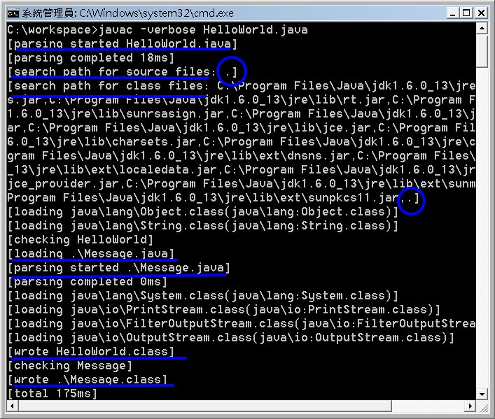
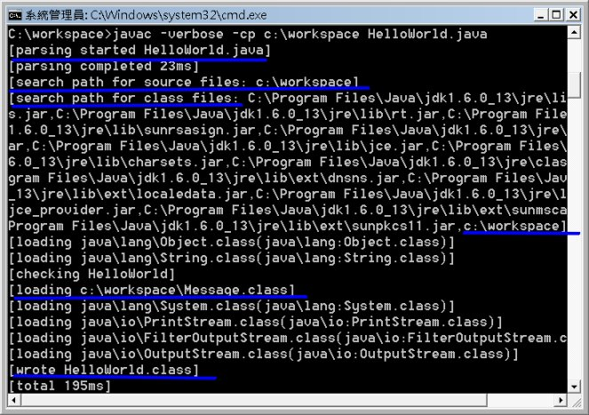
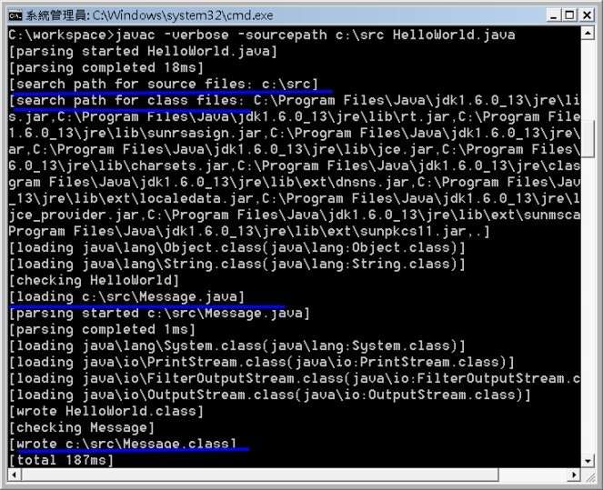

|
|
如果你開發了一個Message.java：public class Message {並寫了個HelloWorld.java： public class HelloWorld {如果這兩個.java是放在同一個目錄中，則你可以直接這麼編譯： javac HelloWorld.java 編譯HelloWorld.java時，編譯器會連同Message.java一起編譯，所以最後會產生HelloWorld.class與Message.class。所以，當你的程式中使用到其它類別時，其實編譯器並不要求該類別已經編譯完成。事實上，編譯器會先看看是不是有該類別的原始碼，才會看看是不是有該類別編譯完成的.class。如果有該類別的原始碼又有.class檔，則看看.class編譯過後，原來的.java是否又有變動，如果有變動過，則重新編譯。 其實可以在編譯時下-verbose引數了解這個順序，刪掉已編譯好的.class，再來一次：  可 以看到編譯時，一開始是剖析HelloWorld.java，然後在目前路徑下搜尋原始碼（藍色圈圈），接著在一堆jar檔及目前路徑下搜尋.class 檔（第二個藍色圈圈），然後載入Message.java進行剖析，最後寫出HelloWorld.class，再寫出Message.class。 直接再執行一次編譯，這次指定Classpath為C:\workspace，編譯的.class與原本的.java也都在這裡頭：  這次發現到，不僅搜尋.class的路徑，連搜尋原始碼的路徑也換為c:\workspace了，而編譯出Message.class後的Message.java沒有更動過，所以這次直接載入Message.class，無需重新編譯Message.java。 在編譯時下-verbose引數，得知了編譯過程的細節。也帶出了一些新的東西：搜尋原始碼的路徑預設與搜尋.class的路徑是相同的。還有搜尋.class的路徑中，除了自行指定的Classpath外，前面那些有的沒的路徑是什麼？ 這邊不打算解釋第二個問題，這牽涉到類別載入器的介紹，之後還會作說明。 搜尋原始碼的路徑，預設是與Classpath相同。其實在編譯時，還可以指定-sourcepath來指定搜尋原始碼的路徑。例如，如果你將Message.java放到c:\src下，而c:\workspace中放HelloWorld.java，編譯時如以下指定：  可 以看到，由於自行指定了-sourcepath，所以搜尋原始碼時，就至c:\src下尋找，而.class的搜尋路徑，則仍以Classpath為主 （一個點符號表示當前路徑，為Classpath的預設值）。最後編出來的.class檔案，預設是放在與.java相同的位置（可以另外使用-d引數來 指定.class的輸出位置，這之後再談）。 所以如果你要執行時，必須下指令如下： java -cp c:\src;c:\workspace HelloWorld 實務上，一定會將.java與.class檔案區隔，也就一定會使用到-sourcepath、-cp與-d引數。直接使用IDE時，都會自動幫你作好這樣的規劃，所以就不用下一堆指令引數，但是了解底層編譯時的原理仍是必要的。 不只編譯時可以下-verbose引數，JDK的一些工具程式，在執行時也可以下-verbose引數，看到一些執行時的細節。像是java、javap等，有時需要看一下囉囉嗦嗦的這些訊息，了解運作時的一些細節。 |